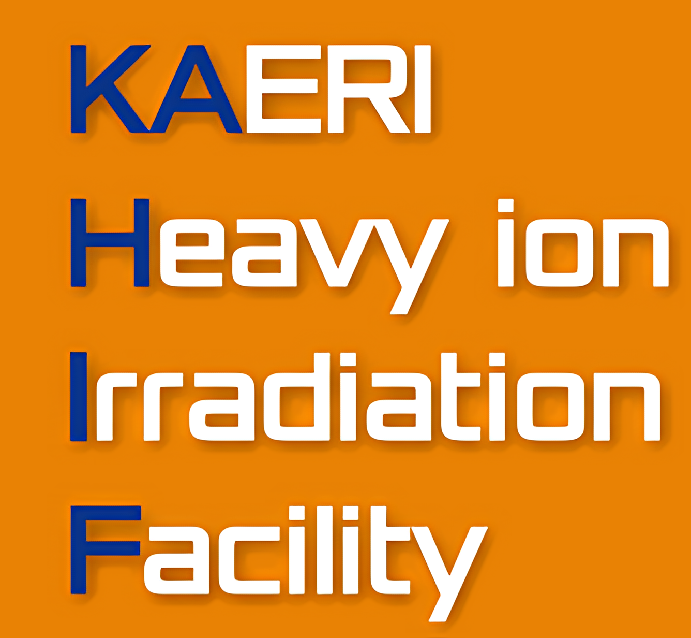

★0
도감 C
♪ 켜짐
이동 ←↑↓→ · 조사 Z · 도감 C
▼
←→ 넘기기 · ↑↓ 스크롤
닫기 X
나가기 X
CHAPTER 1 CLEAR
1장 완료!
「시설 한 바퀴」
▶ 계속하기 (Z)

Road to
KAHIF
한국원자력연구원
중이온빔조사시설 이야기
신입 연구원의 이름은?
(별명도 좋아요)
출근!
배포판 v1.0 · 1장 「시설 한 바퀴」부터 에필로그 「다음 빔을 향해」까지 · 성적표 R
이동 ←↑↓→ / WASD · 확인 Z · 취소 X · 도감 C · 음악 M
스테이지 점수는 최고 기록이 남습니다 · 금 900 · 은 700
닫기 X
▶ 다음 (Z)
측정기 세 곳의 값을 실시간으로 모아 보여 줍니다
닫기 X
ECR 제어 컴퓨터 — Fe 이온빔 조사.mp4
닫기 X
▲
◀
▶
▼
B
A